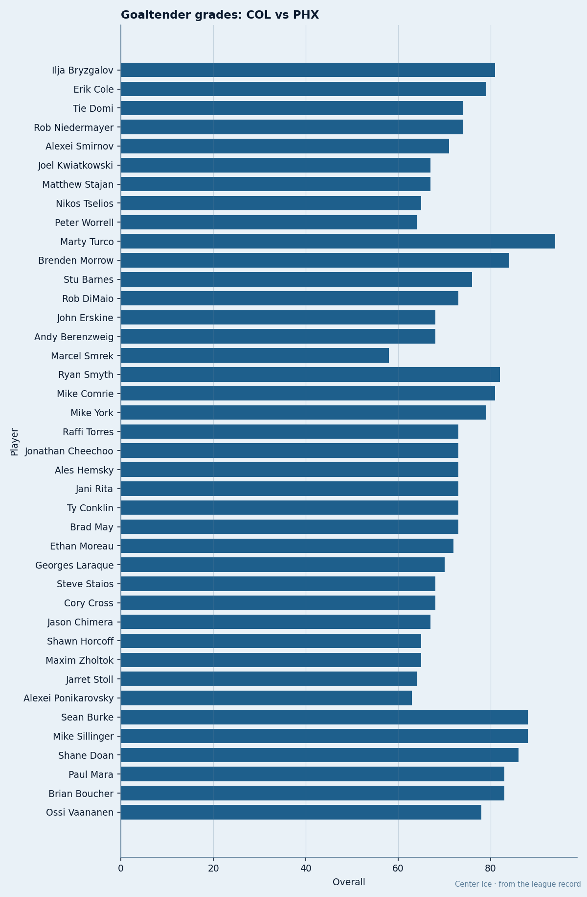
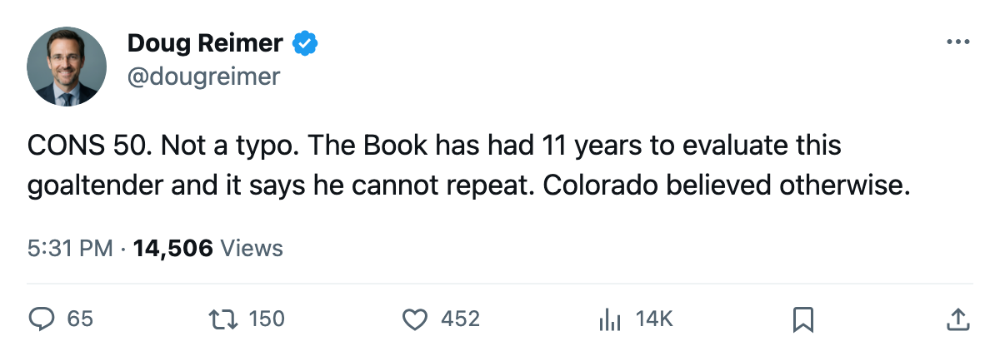
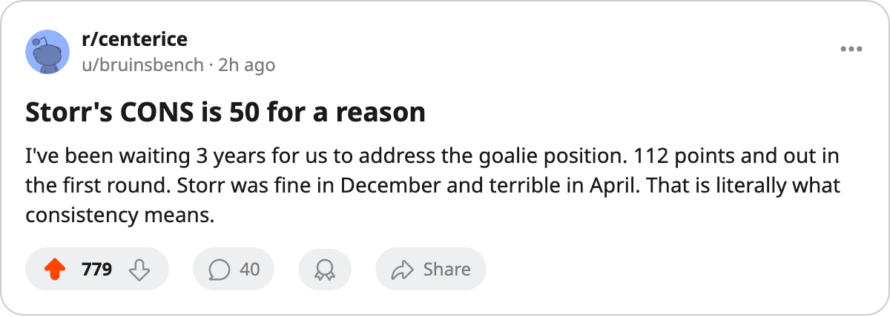

CONS 50: The One Number That Explains Why the 1 Seed Went Home
Colorado built 112 points around six forwards graded 86 or better. Its goaltender carries a consistency grade of 50 from the Book.
 Doug ReimerAnalytics editor, ex-video coach · The Slot Report
Doug ReimerAnalytics editor, ex-video coach · The Slot Report Jamie Storr79's overall grade in the Book is 84. His base is 85. The Development Index shows no change. What the aggregate does not show is his consistency grade: 50. The lowest number on his card, tied with toughness and fighting.
Jamie Storr79's overall grade in the Book is 84. His base is 85. The Development Index shows no change. What the aggregate does not show is his consistency grade: 50. The lowest number on his card, tied with toughness and fighting.
 Colorado Avalanche had 112 points, $71.56M in payroll, and the top seed in the West. It lost to the 8th seed in 7 games. The scoring was there.
Colorado Avalanche had 112 points, $71.56M in payroll, and the top seed in the West. It lost to the 8th seed in 7 games. The scoring was there.  Milan Hejduk82 had 9 points through 7 games, Joe Sakic 7,
Milan Hejduk82 had 9 points through 7 games, Joe Sakic 7,  Paul Kariya83 7. The forwards played their roles at the level their grades predict. The goaltending did not.
Paul Kariya83 7. The forwards played their roles at the level their grades predict. The goaltending did not.
The goalie comparison
Storr made 5 starts against  Phoenix Coyotes: 3 wins, 2 losses, 2.52 goals against average, .859 save percentage.
Phoenix Coyotes: 3 wins, 2 losses, 2.52 goals against average, .859 save percentage.  Trevor Kidd77 made 2 starts: 0 wins, 2 losses, 3.00 GAA, .850. Neither broke .860 in a series where they needed .900 to win.
Trevor Kidd77 made 2 starts: 0 wins, 2 losses, 3.00 GAA, .850. Neither broke .860 in a series where they needed .900 to win.
On the other bench,  Sean Burke88 went 4-2 with a .909 and the Book has him at 88 with zero on the Development Index. Same grade today as his base. 88 with a steady hand beats 84 with a 50 on consistency.
Sean Burke88 went 4-2 with a .909 and the Book has him at 88 with zero on the Development Index. Same grade today as his base. 88 with a steady hand beats 84 with a 50 on consistency.
| goalie | Book overall | form | W-L | GAA | SV% | games |
|---|---|---|---|---|---|---|
| Jamie Storr (COL) | 84 | 0 | 3-2 | 2.52 | .859 | 5 |
| Trevor Kidd (COL) | not in top 60 | n/a | 0-2 | 3.00 | .850 | 2 |
| Sean Burke (PHX) | 88 | 0 | 4-2 | 2.44 | .909 | 6 |
What 71.56 million buys
Colorado's payroll is the third-highest in the league. Its top six forwards carry the following overall grades:  Peter Forsberg89 at 95, Joe Sakic at 90, Paul Kariya at 90, Milan Hejduk at 89,
Peter Forsberg89 at 95, Joe Sakic at 90, Paul Kariya at 90, Milan Hejduk at 89,  Teemu Selanne80 at 87, and
Teemu Selanne80 at 87, and  Adam Foote80 at 86 on defense. Six players at 86 or above.
Adam Foote80 at 86 on defense. Six players at 86 or above.
Storr earns $3.67M with zero years remaining. He was the 7th overall pick in 1994, drafted by Los Angeles. He made two All-Rookie Teams, including the only one in history by a man who played fewer than 20 games in that season. His career has been defined by flashes without repetition. The Book's CONS 50 is 11 years of evidence compressed into one number.

The pattern in the seven games
The series against Phoenix Coyotes went back and forth. Colorado won Game 2 in overtime 3-2, Game 4 5-2, Game 6 4-3. Phoenix won Games 1, 3, 5, 7. In the four losses, Colorado scored 7 goals and allowed 12. In the three wins, it scored 12 and allowed 7. It scored at least 3 in every game Storr won.
The gap between .859 and .909 is 50 saves per hundred shots. Over a seven-game series, that is the entire difference between a club that advances and a club that goes home. Burke held .909 in 6 starts. Storr held .859 in 5.
What happens now
Storr's contract expired with the season. He is 29. His potential grade in the Book is 79, which is below his current overall of 84. The Development Index shows him at zero, neither rising nor falling. The Book has seen this film before and it does not improve with the number of seasons.
Colorado has 6 players with 86+ overall, a $100.00M revenue base, and $20.90M in profit. It has the money. It does not have the goaltending. The Norris Trophy went to Robert Svehla of  Toronto Maple Leafs last season, but the Vezina went to
Toronto Maple Leafs last season, but the Vezina went to  Olaf Kolzig89 of
Olaf Kolzig89 of  Washington Capitals at 87. The league's best goalies in the Book are Giguere at 97, Turco at 94, and Luongo at 94. Storr at 84 is four tiers below them.
Washington Capitals at 87. The league's best goalies in the Book are Giguere at 97, Turco at 94, and Luongo at 94. Storr at 84 is four tiers below them.
The 7-game exit is the failure, and it lives at one position.

